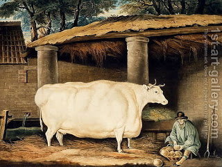

Bava Kamma 3 - All Damages Are Not Equal
Goring (using horns) is unique in that the ox's intent is to damage, and it is the owner's property, and he needs to watch it; its subcategories include squatting and kicking.
Eating (tooth) is unique in that the animal's intent is for self-gratification; its subcategories include an animal scratching against the wall or soiling fruit by frolicking.
Do subcategories have the same laws as the main damages? Mostly yes, with the exception of a case where a cow was walking and a pebble shot from under its foot and broke vessels, for which the owner pays only half the damages.